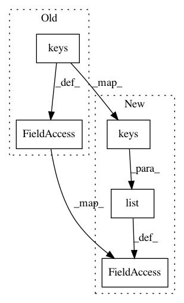

1521861b2a2b129a447192264ed06f63ab89fd98,oddt/scoring/models/classifiers.py,neuralnetwork,__init__,#neuralnetwork#,12
Before Change
def __init__(self, *args, **kwargs):
Assemble Neural network using sklearn pipeline
// Cherrypick arguments for model. Exclude "steps", which is pipeline argument
local_kwargs = {key: kwargs.pop(key) for key in kwargs.keys() if key != "steps" and len(key.split("__", 1)) == 1}
self.pipeline = Pipeline([("empty_dims_remover", VarianceThreshold()),
("scaler", StandardScaler()),
("neural_network", MLPClassifier(*args, **local_kwargs))
]).set_params(**kwargs)
After Change
def __init__(self, *args, **kwargs):
Assemble Neural network using sklearn pipeline
// Cherrypick arguments for model. Exclude "steps", which is pipeline argument
local_kwargs = {key: kwargs.pop(key) for key in list(kwargs.keys()) if key != "steps" and len(key.split("__", 1)) == 1}
self.pipeline = Pipeline([("empty_dims_remover", VarianceThreshold()),
("scaler", StandardScaler()),
("neural_network", MLPClassifier(*args, **local_kwargs))
]).set_params(**kwargs)
In pattern: SUPERPATTERN
Frequency: 5
Non-data size: 5
Instances
Project Name: oddt/oddt
Commit Name: 1521861b2a2b129a447192264ed06f63ab89fd98
Time: 2016-09-29
Author: maciek@wojcikowski.pl
File Name: oddt/scoring/models/classifiers.py
Class Name: neuralnetwork
Method Name: __init__
Project Name: oddt/oddt
Commit Name: 1521861b2a2b129a447192264ed06f63ab89fd98
Time: 2016-09-29
Author: maciek@wojcikowski.pl
File Name: oddt/scoring/models/regressors.py
Class Name: svm
Method Name: __init__
Project Name: oddt/oddt
Commit Name: 1521861b2a2b129a447192264ed06f63ab89fd98
Time: 2016-09-29
Author: maciek@wojcikowski.pl
File Name: oddt/scoring/models/regressors.py
Class Name: neuralnetwork
Method Name: __init__
Project Name: richzhang/colorization-pytorch
Commit Name: 9cecc5fc9e19e08bf4c0d91b64fe9d45c83c610c
Time: 2017-04-20
Author: taesung_park@berkeley.edu
File Name: util/visualizer.py
Class Name: Visualizer
Method Name: plot_current_errors
Project Name: oddt/oddt
Commit Name: 1521861b2a2b129a447192264ed06f63ab89fd98
Time: 2016-09-29
Author: maciek@wojcikowski.pl
File Name: oddt/scoring/models/classifiers.py
Class Name: svm
Method Name: __init__